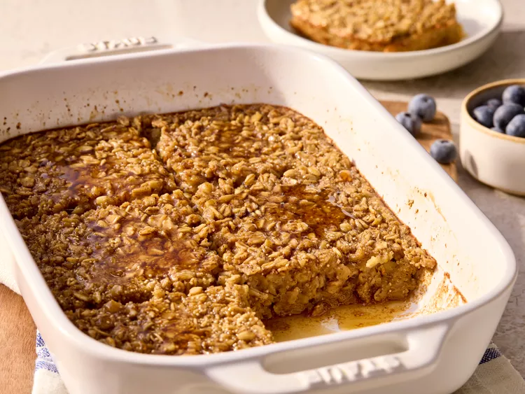

Overnight Baked Oatmeal

Description
Ingredients
- 2 large eggs
- 2 cups milk or unsweetened plant milk of your choice
- 1/4 cup maple syrup
- 1/4 cup packed brown sugar
- 1 teaspoon vanilla extract
- 1 teaspoon ground cinnamon
- 1/2 teaspoon salt
- 2 cups regular rolled oats (not quick cooking)
- 1/3 cup dry amaranth, buckwheat groats or quinoa (optional)
Directions
- Gather all ingredients.Ingredients for overnight baked oatmeal including oats, eggs, milk, and spices on a counter
- Grease a 2-quart rectangular baking dish. White baking dish greased with butter beside a butter stick
- Whisk eggs, milk, maple syrup, brown sugar, vanilla, cinnamon, and salt together in the prepared dish. Hand whisking wet ingredients and spices in a baking dish
- Stir in oats and amaranth. If desired, stir in flavor variation mix-ins (see below).Spatula folding oats and wet mixture in a baking dish
- Cover and chill at least overnight or up to 3 days. Oatmeal mixture covered with plastic wrap in a baking dish
- Preheat the oven to 350 degrees F (180 degrees C). Uncover and stir to re-incorporate all of the ingredients.
- Cooked oatmeal mixture being stirred with a spatula in a dish
- Bake, uncovered, until golden brown and the center is set, 45 to 55 minutes.
- Fully baked oatmeal in a white dish cooling on a wire rack
- Let stand 10 minutes before serving. Serve warm.
Home